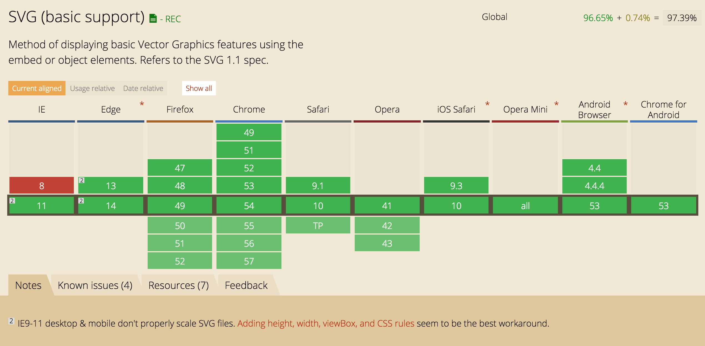

SVG
Scalable Vector Graphics
What?
Scalable Vector Graphics
- XML based markup language
- Used to generate vector graphics on the web
- Did you know that vectors scale without losing quality like raster images? It's true I read it in an internet
- Works with web standards like JS and CSS
- Accessibility support
- Complex Animations - Recommend looking at GSAP among others
- MDN Docs - https://developer.mozilla.org/en-US/docs/Web/SVG
Great Support!
See the Pen Diving SVG Animation by Chris Gannon (@chrisgannon) on CodePen.
See the Pen Pull Down to Refresh (Paper Plane) by Nikolay Talanov (@suez) on CodePen.
See the Pen SVG Rainbow Rocket Man by Chris Gannon (@chrisgannon) on CodePen.
See the Pen ·● MOTION for the web ●· by LegoMushroom (@sol0mka) on CodePen.
See the Pen SVG Animation by jjperezaguinaga (@jjperezaguinaga) on CodePen.
Great Job!
Baby steps

Adding SVGs to your project
SVG Code
SVG Code
- Simple shapes are relatively easy to hand code
- Complex designs recommend using a vector graphic library such as Illustrator or Sketch
- Exports from libraries usually add unncessary cruft - optimization with SVGO
- Slightly different style attributes/properties than familiar CSS properties
Inline SVG
See the Pen Inline SVG by Greg (@gcraftyg) on CodePen.
Inline SVG
- Complete styling control including individual shapes
- Adds bloat to HTML
<img />
<img />
- Easy to implement
- Acts just like an .png/.jpg/.gif
- Cannot be styled outside of the <img /> abilities
CSS Background-Image
See the Pen Background SVG by Greg (@gcraftyg) on CodePen.
CSS Background-Image
- Maintained in CSS (no added markup bloat)
- Limited styling control
- Tricky for accessibility
Sprite (<use />)
See the Pen Sprite SVG by Greg (@gcraftyg) on CodePen.
Sprite (<use />)
- Easy to implement with build step
- CSS styling...cannot style individual shapes (thanks shadow-dom)
- Great for icon systems
- Does add bloat to HTML
Sprite External Reference
See the Pen External SVG by Greg (@gcraftyg) on CodePen.
Sprite External Reference
- Leverages caching
- Easy to implement with build step
- Does NOT add bloat to HTML
- CSS styling...cannot style individual shapes
- But...is NOT supported in IE 9 - 11
Icon Workflow
Icon Workflow with React
- Export from Illustrator
- svg-sprite
- svg-go
- <Icon />